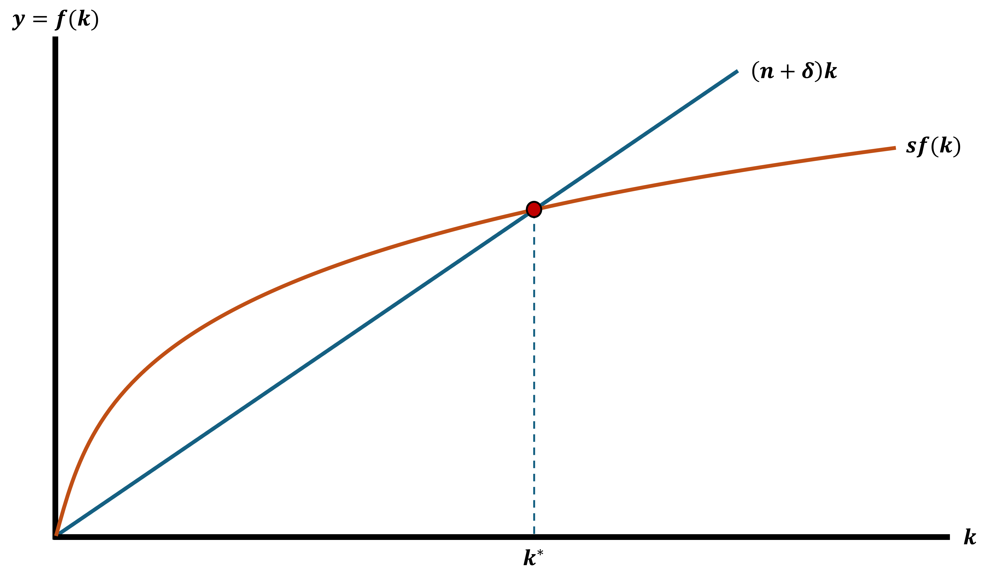
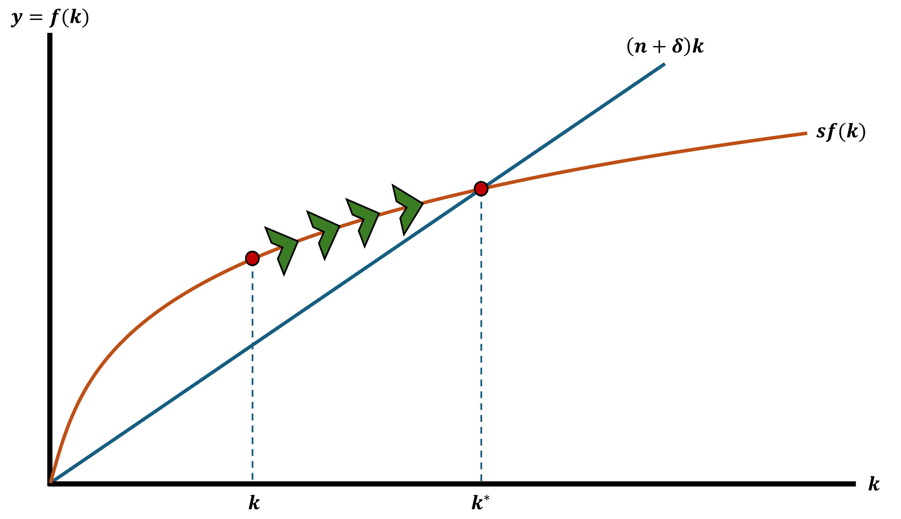
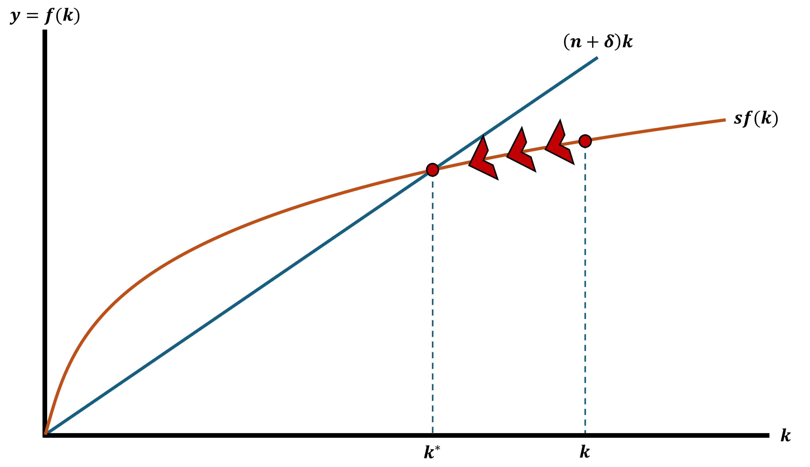
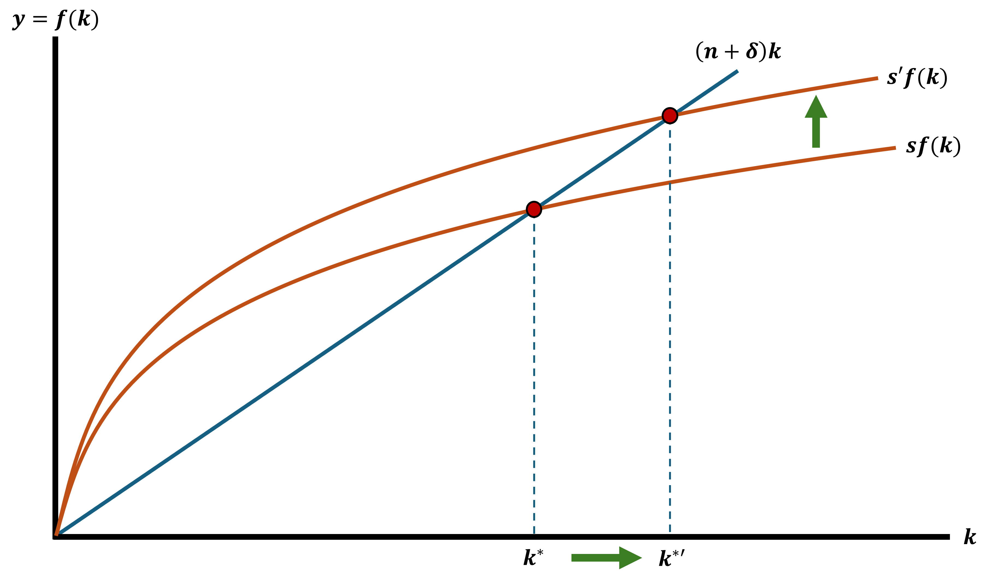

Model 02 - Solow Growth Model
Now we can add some important features
- Population growth
- Technological change
- Emphasizes looking at outcomes in per worker terms
Solow Growth Model Assumptions
1. Output per worker \(y\) depends only on the amount of capital per worker \(k\)
2. Every worker saves a proportion \(s\) of their income
3. Population grows at rate \(n\)
4. Capital depreciates at rate \(\delta\)
5. Capital stock depends on new investment
Solow Growth Model Assumptions
1. Output per worker \(y\) depends only on the amount of capital per worker \(k\)
\[ y = f(k)\]
- \(f()\) is increasing (more capital leads to more output)
- \(f()\) is concave (decreasing returns to capital)
2. Every worker saves a proportion \(s\) of their income
3. Population grows at rate \(n\)
4. Capital depreciates at rate \(\delta\)
5. Capital stock depends on new investment
Solow Growth Model Assumptions
1. Output per worker \(y\) depends only on the amount of capital per worker \(k\)
2. Every worker saves a proportion \(s\) of their income
\[0 \leq s \leq 1\]
3. Population grows at rate \(n\)
4. Capital depreciates at rate \(\delta\)
5. Capital stock depends on new investment
Solow Growth Model Assumptions
1. Output per worker \(y\) depends only on the amount of capital per worker \(k\)
2. Every worker saves a proportion \(s\) of their income
3. Population grows at rate \(n\)
4. Capital depreciates at rate \(\delta\)
5. Capital stock depends on new investment
Solow Growth Model Assumptions
1. Output per worker \(y\) depends only on the amount of capital per worker \(k\)
2. Every worker saves a proportion \(s\) of their income
3. Population grows at rate \(n\)
4. Capital depreciates at rate \(\delta\)
5. Capital stock depends on new investment
- Every time period workers save some of their income \(sf(k)\)
- However, capital depreciates so we lose \(\delta k\)
- The populations grows at rate \(n\) so the capital per worker gets smaller by \(nk\)
Solow - Change in Capital per Worker
\(\Delta k\) \(=\) \(sf(k)\) \(-\) \(nk\) \(-\) \(\delta k\)
\(\Delta k\): Growth of capital per worker
\(sf(k)\): Savings
\(nk\): Net new workers
\(\delta k\): Capital depreciation
Solow - Change in Capital per Worker
\(\Delta k\) \(=\) \(sf(k)\) \(-\) \(nk\) \(-\) \(\delta k\)
\(\Delta k\): Growth of capital per worker
The more capital a worker has to work with, the more output that they can produce
The change in capital per worker depends on the other components
\(sf(k)\): Savings
\(nk\): Net new workers
\(\delta k\): Capital depreciation
Solow - Change in Capital per Worker
\(\Delta k\) \(=\) \(sf(k)\) \(-\) \(nk\) \(-\) \(\delta k\)
- \(\Delta k\): Growth of capital per worker
\(sf(k)\): Savings (Positive)
- Each worker saves a proportion of their income and is reinvested into “capital in the future”
\(nk\): Net new workers
\(\delta k\): Capital depreciation
Solow - Change in Capital per Worker
\(\Delta k\) \(=\) \(sf(k)\) \(-\) \(nk\) \(-\) \(\delta k\)
\(\Delta k\): Growth of capital per worker
\(sf(k)\): Savings
\(nk\): Net new workers (Negative)
Population (workers) grow at a rate \(n \geq 0\) (usually very small)
As there are more people, there is less capital per worker determined by \(nk\)
- \(\delta k\): Capital depreciation
Solow - Change in Capital per Worker
\(\Delta k\) \(=\) \(sf(k)\) \(-\) \(nk\) \(-\) \(\delta k\)
\(\Delta k\): Growth of capital per worker
\(sf(k)\): Savings
\(nk\): Net new workers
\(\delta k\): Capital depreciation (Negative)
- Capital requires service (repairs) We lose \(\delta k\) every period
- \(0 < \delta < 1\)
Solow Growth Model - Steady State
The Solow Model allows us to consider a steady state level of capital
- Steady State: When the economy has fully adjusted and there is no change in some variable
- The economy is in an equilibrium that is stable
- Output and capital per worker are no longer changing
We want \(k\) to be in steady state
This means that \(\Delta k = 0\) Because \(k\) is no longer changing
We call this level of capital \(k^{*}\)
Solow Growth Model - Steady State
When the economy is in steady state \(k^{*}\) we have:
\[ \Delta k = 0 = sf(k^{*}) - (n + \delta)k^{*} \\ sf(k^{*}) = (n + \delta)k^{*} \]
More than the math, I want you to understand this intuitively
- Graphs are great to be able to talk about this
Steady State

Out of Steady State

Out of Steady State

Increase in Savings Rate

Solow Growth Model Dynamics
Be aware of all the possible moving pieces in this model
It allows us to explore the effects of changes in:
- \(s\): Savings Rates
- \(\delta\): Depreciation Rate
- \(n\): Population Growth Rate
Solow Growth Model
What? Why? Huh?
Why this model?
- It is a simple and intuitive way of understanding how savings, population growth, and technology change impacts long-run economic growth
- What does it do? Decomposes growth into two key forces
1. Capital accumulation through savings and investment
2. Population growth as the labor force expands
- Huh? Again with this fantasy stuff?
Criticisms of Solow
There is a constant savings rate that is exogenously given
Ignores human capital
Predicts too much convergence
- Economies with the same rates \((s,n,\delta)\) should reach the same output per person
No role for institutions or policy
Treats labor as homogeneous where all workers are the same